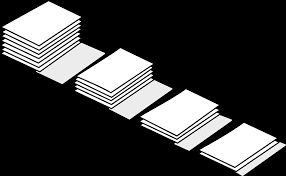
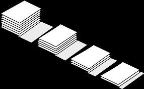

#################################################
### SWAPI som eksempel for .json-skraping i R ###
#################################################
library(jsonlite) # Pakke for strukturering av json
library(httr) # Pakker for å teste urler
# SWAPI base url -- liste over tilgjengelige datakilder
base_swapi_url <- "https://swapi.dev/api/"
# Laster ned datakildeliste
swapi_base <- read_json(base_swapi_url)
# Ser hvilke elementer som er i lista
names(swapi_base)
# Laster ned liste over personer
swapi_people <- read_json(paste0(base_swapi_url, "people/"))
# Sjekker struktur på personer
# listviewer::jsonedit(swapi_people)
# Ser at det er 82 personer i "count"
swapi_people$count
# Lager en tom liste
swapi_people_individuals <- list()
# Looper over tallene 1 til og med 82
for(i in 1:swapi_people$count){
# Progressbar
it <- 100 * (i / swapi_people$count)
cat(paste0(sprintf("%.2f%% ", it), "\r"))
# Tester url (f.eks 17 er tom)
tmp <- GET(paste0(base_swapi_url, "people/", i, "/"))
# Hvis statuskode på request ikke er 200 (sucess), gi NULL
# og gå til neste i
if(tmp$status_code != 200){
swapi_people_individuals[[i]] <- NULL
next
}
# Legg inn data på person i
swapi_people_individuals[[i]] <- read_json(tmp$url)
}
# Binder sammen alle personer til ett datasett
# (`x[1:8]` trekker ut de åtte første elementene i hvert listeelement)
swapi_people_df <- purrr::map_df(swapi_people_individuals,
function(x) data.frame(x[1:8]))
# Tabell over øyefarge og kjønn
table(swapi_people_df$eye_color, swapi_people_df$gender)
 
